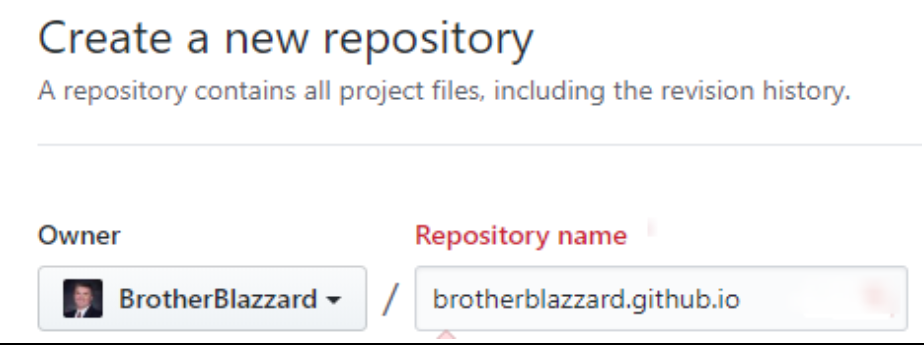

Computer Setup and Account Creation
Overview
Please be sure to complete all of these before continuing.
-
Visual Studio Code - The text editor that will be used in the course -
Teams - For all course communication and collaboration -
Github - To store and submit your code throughout the semester. -
Github Pages - Program on your computer that allows you to work with github. -
Git - Program on your computer that allows you to work with github.
Getting all set up
Visual Studio Code
There are many technologies and integrated development environments available to designers and developers. If you look at current job descriptions referencing front-end web design and development, you will find that qualification statements center on core technologies including HTML, CSS, and JavaScript versus specific development software tools. Sometimes preferred development technologies are listed, and they are specific to that organization. The debate about the best tool to use is ongoing and opinionated. The intent of this class is not to teach a tool but rather provide a firm foundation in core web technologies.
Visual Studio (VS) Code is one of many markup editors that can be used for front-end web design and development. This course uses VS Code as the recommended editor because it is free, popular in the industry (as shown by Stack Overflow), and easy to use. In addition, VS Code works on the common system platforms of Windows, macOS, and Linux. It will behave basically the same on all of these operating systems and has a very active development cycle and online support system which means it is being updated regularly and new tools are developed regularly. This course will will use the VS Code editor to write HTML, CSS, and JavaScript. In addition, VS Code has git technology and services built into the editor. This allows you to practice source control and publish your local content to a remote GitHub Pages repository for user consumption on a public domain name.
Download and Install Instructions

Install the Visual Studio Code programming environment on your local system and become familiar with some basic operations, tooling, and features.
-
Navigate to the Visual Studio Code installation page.
-
Download the stable build for your platform OS.
-
Note that by downloading and using VS Code, you agree to the license terms and privacy statement.
-
Locate the download and start the installation for your platform as guided by the installation routine.
-
Proceed through all the steps as given until VS Code is installed and verify that you can start VS Code.
-
Install the Live Server extension in VS Code. This extension will launch a local Server instance of our page on our default browser for testing and has live reload features.
-
Install the Beautify extension in VS Code. This extension will auto format our code with proper indentation to increase human readability.
Other Helpful Resources
You may also watch the following media content that include helpful tips and tricks to help you work efficiently with this program.
Microsoft Teams
Follow this link to download and install Microsoft Teams on your computer. Teams will be used for all course communication, discussions, troubleshooting and collaboration. For this purpose, you're also encouraged to install it on your mobile device. Once you have installed it, log in with your byui email and credentials. You will then see our WDD230 team that you've been invited to.
Before you get started in Teams, please take a moment to read about Teams productivity tips and etiquette here.
Github
GitHub is a free collaboration and version control online service. You can think of the GitHub repositories as a cloud-based storage system for your projects. GitHub can be used as an web hosting service with a special repository named GitHub Pages. We will use GitHub Pages to publish assignments in this course. GitHub is based upon Git—a version control framework (software).
Think of repositories as folders. They are special folders in that they are linked and supported by collaborative and file history information, all of which is hidden in the background. You will be working with a local repository, i.e., a folder on your computer system, that is linked to a remote repository on GitHub. You will work locally and then when you are ready to publish to the web, you will upload or push the content to the remote, duplicate repository.
Instructions
If you have a Github account, you do not need to do this.
-
Navigate in your browser to github.com.
-
Create a username, enter your BYU-Idaho email address, and create a password to obtain an account and click the button 'Sign Up for GitHub'.
-
Record your username and password in a secure and logical location.
-
Choose the public option in the next screen and continue to the next step.
-
In the final screen of the setup, select your preferences to create your account.
-
Verify your account through the email that is sent to your BYU-Idaho email address.
-
Verify that your GitHub account is active by navigating in your browser to https://github.com/yourusername.
Create a new Repo and set up Github Pages
"GitHub Pages is a static site hosting service designed to host your personal, organization, or project pages directly from a GitHub repository" —What is GitHub Pages?
In this course, you will be publishing your weekly web work to your GitHub Pages hosted site. The instructor will then be able to access your site and conduct feedback and assessment as needed. This whole process of file management, working with repositories, and version control is also a skill set that is required in front-end web design and development. You have already established a GitHub account, and you will now make a special, GitHub Pages repository which will host your web work.
You will need to name your repository exactly as demonstrated.
Part 1: Create the GitHub Pages Repository
Setting Up GitHub Pages Demonstration
- Sign in to your GitHub.com account.
- Create a new private repository by either clicking the plus symbol at the upper-right portion of the screen and selecting New repository or clicking the New repository green button if you are on the GitHub generic home page.
- On the new repository screen, enter the new repository name using your owner/username
followed by ".github.io". For example, if my username was "orsonpratt", my repository name should be
entered as "orsonpratt.github.io" in the text box provided.
Do not leave off the username as many students think it is already provided. It is NOT already provided, rather the username shown before the textbox is indicating in what folder or user this repository is being created, thus the front slash. Note this example:

- Provide a description of the repository.
- Select the Public option.
- You do not need to initialize this repo with a README markdown (MD) file nor add any other files at this point.
- Finally, click the green Create Repository button.
If you make a mistake with the repository name, delete the repository using the repository's settings menu.
Using GitHub Pages with Visual Studio Code
- You will need to install git services before you can use git commands directly within Visual Studio Code. Navigate to https://git-scm.com/downloads in your browser and download the appropriate version for your platform.
- Install git on your computer using the default options.
- Open up an interface to the command line using the command window (Windows) or
Terminal application (Mac).
Using the Command Line
Command (Windows): Press WinKey + R keys on your keyboard. Type cmd in the dialog box and then click Enter or OK to start the command window application.
Terminal on Mac: The Terminal application is found within the utilities folder in Applications. Additional install helps if needed for Mac users: Mac Install Notes
- Run two git config commands by pressing the enter key after you enter each line
carefully as given below using your own credentials which establishes your git global user.name and
user.email.
git config --global user.name "Use your GitHub username"git config --global user.email "Enter your email address" - You can now close the command or terminal window.
- On your GitHub pages site, copy your GitHub Pages repository URL.
- Please note that when we talk about the corresponding GitHub Pages URL, it is https://susanbsmith.github.io. The example above is the repository URL. - Launch or relaunch Visual Studio Code.
- In VS Code, open up the Command Palette from the View menu.
- The command palette can be opened using a keyboard shortcut - F1 or Ctrl+Shift+P (Mac: Command+Shift+P) - Type git clone in the command line provided and enter.
- Paste the copied URL from step 1 into the text input area provided labeled Repository URL. Press 'Enter' to confirm.
- Select a folder or create a new folder on your local computer that will be the location
of your local repository and that is linked to the GitHub Pages remote repository. Use the dialog box to
select the correct host folder.
VS Code will create a sub-folder named after your GitHub Pages domain.
This will be your working folder for the class assignments that are to be published. - Note the notification that pops up on the VS Code screen in the lower right corner. Go ahead and click Open Repository. This will direct your VS Code Explorer to open that folder location. This folder location will be empty of course.
- You are now ready to build organized web content within this local folder/repository.
You may wish to click File -> Open Folder to view the folder location and review how it was named.